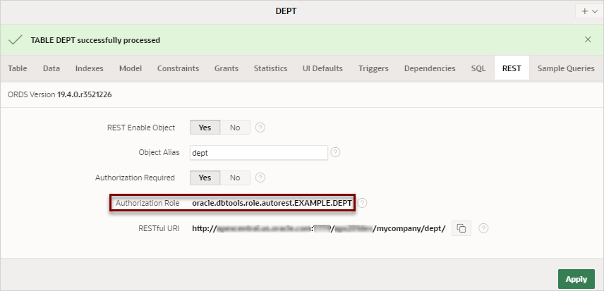
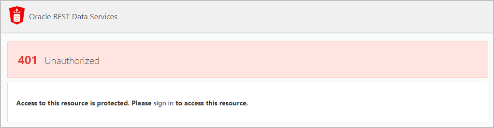

7.3 Enabling Authorization for REST Enabled Objects
Restrict access for REST enabled objects on the REST tab in Object Browser. Use the resulting Authorization Role information to configure user roles in ORDS.
When authorization is disabled for REST enabled objects, they are fully exposed to normal internet traffic and publicly accessible. After you enable authorization for the object in Object Browser, you must use the resulting Authorization Role to configure your authorized user roles in ORDS.
Use the procedures in Configuring Secure Access to RESTful Services in the Oracle REST Data Services Installation, Configuration, and Development Guide to configure ORDS.
To enable authorization on a REST enabled object:
- On the Workspace home page, click SQL Workshop.
- Select Object Browser.
- From the list of object types, select the object type (such as Tables).
- Select the REST enabled object.
- Select the REST tab of the REST enabled object.
- For Authorization Required, click to Yes.
- Click Apply.
A new Authorization Role field appears showing the ORDS created role associated with the AutoREST Enabled object.
Description of the illustration authorization_role.png
Attempting to access the RESTful URI for the object now displays a "401 - Unauthorized" error message.
Description of the illustration unauthorized.png
See Also:
Configuring Secure Access to RESTful Services in the Oracle REST Data Services Installation, Configuration, and Development Guide
Parent topic: Enabling Data Exchange with RESTful Services